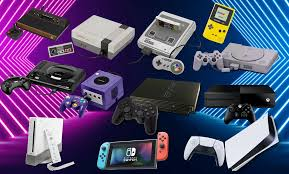
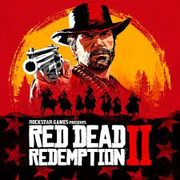
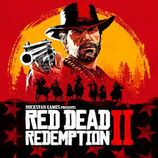

Me llamo Juan Fausto Poggi
Tengo 17 años de edad, naci el 24 de Enero de 2008, mi color favorito es el azul o celeste, y me gusta la tecnologia. Tuve varias consolas, como por ejemplo la Playstation 2, 3 y 4. Tambien tuve varias consolas de Nintendo. Desde los 3 o 4 años uso lentes, me diacnosticaron con estrabismo, y logicamente ya se volvieron parte de mi vida como cualquiera. Me gusta mucho ver peliculas y series, en especial peliculas de los 80-90. Cuando era mas pequeño, como a los 11 años hacia natacion, pero por la pandemia del Covid la tuve que dejar. Tengo un Perro llamado Atahualpa, el cual es un Schnauzer Gigante que tendra unos 6 años. Comenze a probar cosas relacionadas a la programacion a los 11 años, y desde entonces me gusto bastante. Me gusta la calistenia, comenze a practicar dominadas como por Verano de 2023, y fui mejorando bastante. Estoy en un nivel secundario de educacion.

Mis mejores amigos son:
- Marco
- Robert
- Sebas
- Thiago
- Cefe
- Ivan
- Paris
- Bauti
- Vicky
Estudio en la EPET 20:
Me gustan tambien mucho los videojuegos, en especial los "Indie", por ejemplo:
- Project Zomboid
- Lethal Company
- Terraria
- Unturned
- Cuphead
- Repo
Aunque tambien videojuegos "grandes" o "triple AAA" como:
- FIFA
- Red Dead Redemption 2
- GTA San Andreas/VI/V
- L4D2
- TF2
- Call Of Duty Black Ops II/III

 


Me esta interesando HTML. Tengo un hermano llamado Felipe, el tiene 13 años, este es su primer año de secundaria y dicen que nos parecemos mucho. Me gusta el Futbol, soy hincha de Boca Juniors, y de Europa no me gusta un equipo especifico, simplemente los veo. Estudie Ingles como por 9 años pero lamentablemente tuve que dejarlo por el turno vespertino de la escuela. De grande quiero dedicarme a algor relacionado a la Programacion o capaz Ingenieria.


Mis comidas favoritas son:
- Pizza
- Hamburguesa
- Asado
- Empanadas
- Guiso
- Pastas


Mi Redes Sociales favorita son:
Youtube
Twiteer